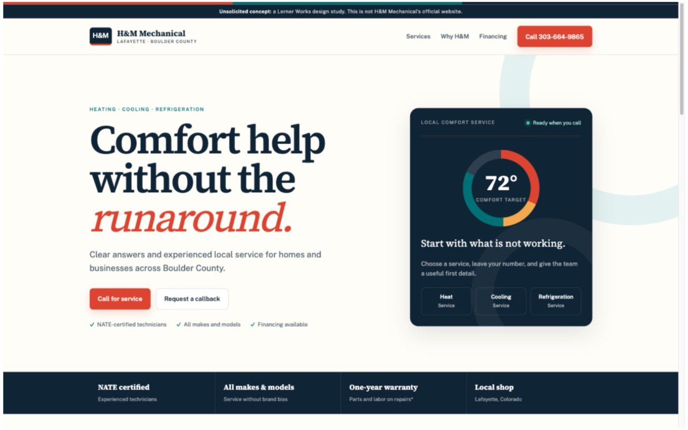
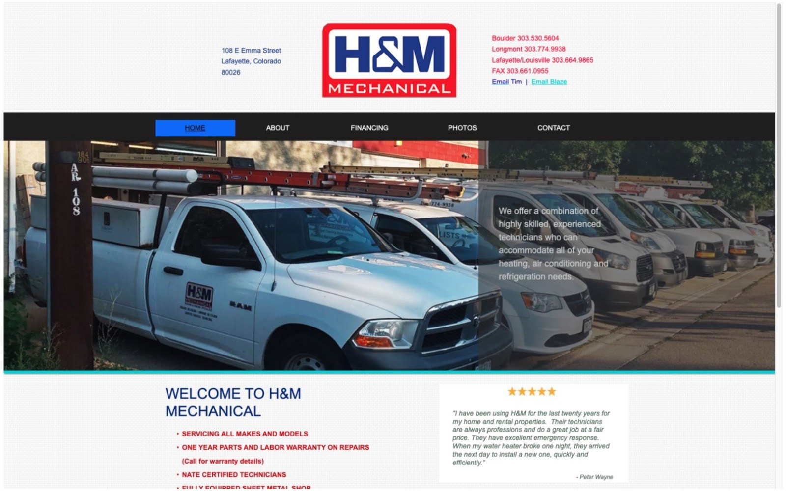
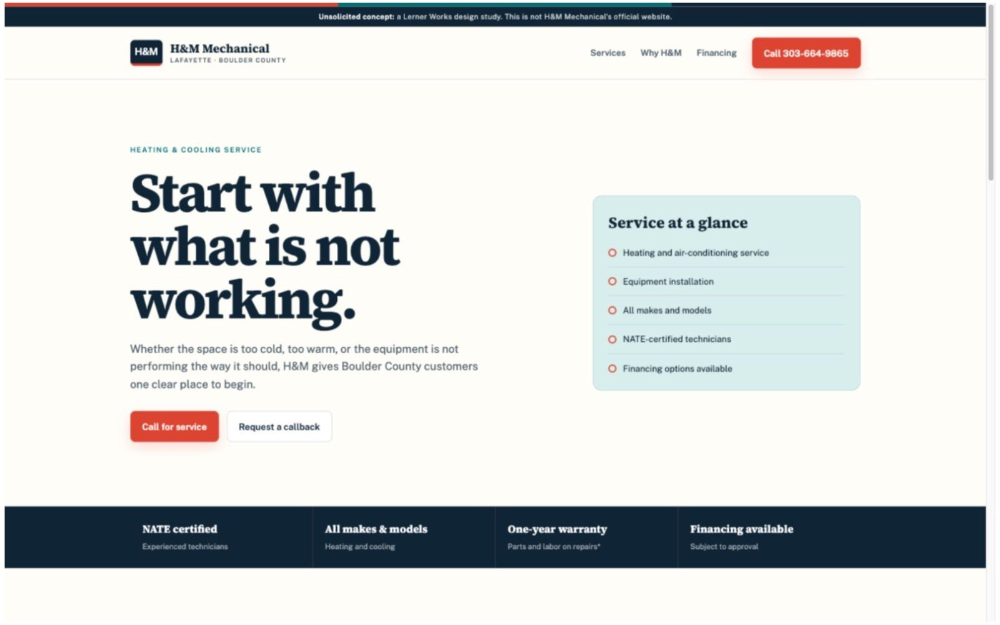
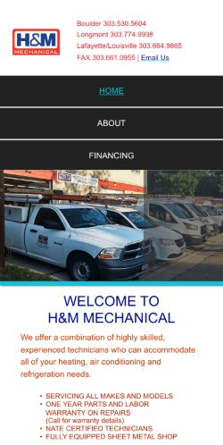
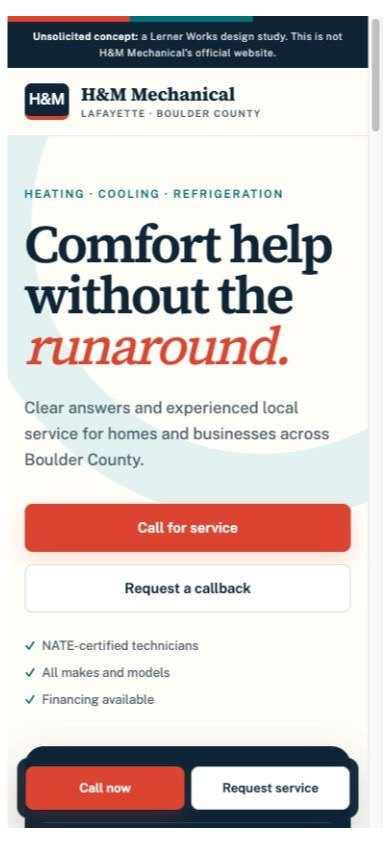

H&M Mechanical
A two-page HVAC concept built to turn a mobile visit into one clear call or service-request path.
- Business
- H&M Mechanical, Lafayette. Heating, cooling and refrigeration.
- Relationship
- None. Done on my own time; not commissioned, reviewed or approved by H&M.
- Scope
- Diagnosis of the live site, two-page concept, original copy, before-and-after measurement
- Year
- 2026
- Status
- Concept complete and hosted un-indexed; next step is sending it to the owner

At a glance
- 0 → 1 tap
- to call, from three plain-text numbers to one linked one
- 0 → 3
- useful request fields: name, phone and the service needed
- 2 → 1
- sites to maintain, once desktop and mobile share one responsive page
- 0 scripts
- and no third-party requests in the finished concept
Disclosure. H&M Mechanical did not commission this work and has not seen or approved it. The claims about the live site were true on the dates recorded here and may since have changed. The concept is hosted only so the diagnosis can be checked, and it is excluded from search indexes.
The situation
H&M Mechanical is a Lafayette heating, air-conditioning and refrigeration business with the kind of proof a local buyer looks for: NATE-certified technicians, service across makes and models, financing, a repair warranty and a fully equipped sheet-metal shop.
The mobile contact path did not carry that credibility through to action. The live site showed three regional phone numbers, but none was coded as a phone link — including the number directly below “Call now for a quote.” The mobile form asked only for an optional name and email address. It collected neither a callback number nor the reason for contacting the company.
The problem in one sentence: an urgent mobile visitor could not tap to call or provide enough information to request service.

Constraints
This is an independent concept, done without the business's involvement, so the design could not invent customer counts, response times, service promises or performance outcomes. Every business claim had to be verifiable on the current site or a local business listing. The concept had to be useful on a phone under time pressure, simple enough for a small service business to maintain, and limited to a homepage and one service page.
The hosted concept must stay out of search indexes and be visibly disclosed as independent work. The case study itself remains indexable because the diagnosis, design decisions and measurements are Lerner Works' own work.
What I built
One responsive system instead of separate desktop and mobile sites. The same page now serves every viewport, so navigation, copy and conversion actions cannot drift between two versions.
A homepage organized around the service decision. Heating, cooling and refrigeration are visible immediately. NATE certification, warranty, financing and local-shop proof sit on the same path as the call action instead of being scattered across navigation.
A three-field request that produces a useful lead. Name, phone number and service needed replace the optional name-and-email pair. Three fields is still short, but now the business can return the call with context.

Decisions and tradeoffs
Conversion clarity over a cosmetic reskin. The most important change is a real tel: link and a usable request form. Color and typography support that hierarchy; they are not the case study's reason for existing.
One primary number over three equal choices. The Lafayette and Louisville line becomes the persistent action because that is the business location and the least ambiguous local starting point. Regional numbers can remain as supporting contact information if the owner confirms they still route differently.
No stock photography. The concept uses type, color and a simple comfort-system panel rather than pretending a generic technician or home belongs to H&M. Real team and project photography would be the first visual upgrade after owner involvement.
Three fields, not two and not eleven. The form is one field longer than the current mobile form but captures the two things the existing form misses: a callback route and the service context.
Result
The concept changes the measurable conversion path before making any claim about future leads. Tap-to-call moves from unavailable to one tap. The form moves from zero useful service-request fields to three. Two device-specific websites become one responsive system.
- Tap to call
- Unavailable → 1 tap
- Useful request fields
- 0 → 3
- Responsive systems
- 2 → 1
- Mobile phone links
- 0 → 4
- Required lead fields
- 0 → 3
- Client-side scripts
- 0 in the concept

/phone/ site.
The live mobile PageSpeed baseline is 79 Performance, 81 Accessibility and a 4.0-second Largest Contentful Paint. The equivalent after score is intentionally not estimated here: PageSpeed needs a reachable hosted URL, and the noindex concept should not be put online before the owner sees it. That final measurement belongs in this section after owner review and private-preview hosting.
The finished concept currently ships no client-side scripts or third-party resources. Its homepage HTML, shared stylesheet and two self-hosted fonts total 101,308 bytes on disk before server compression.
Where it stands
The two-page concept and case study are complete as independent portfolio work. H&M did not commission or approve the design, and the concept form is intentionally not connected. The next step is to send the diagnosis and a private link to the owner before publishing the portfolio case study.